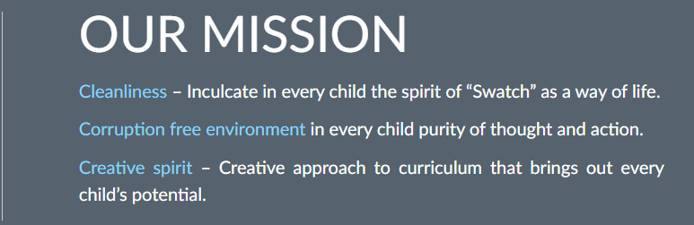

Learning is a treasure that will follow its owner everywhere. Learning at D.A.V. Boys Gopalapuram is not restricted to ensuring academic success alone but preparing students to take on the global challenges without compromising on “their character their cultures and above all their Indianness.” D.A.V. Boys Senior Secondary School situated at Gopalapuram, Chennai is the first branch of the D.A.V. Group of Schools managed by The Tamil Nadu Arya Samaj Educational Society which is registered under the Societies Act. It was established in 1970 and is affiliated to and fully recognized up to the class XII level by the C.B.S.E. New Delhi. With a highly qualified, competent and dedicated faculty, D.A.V.B.S.S.School has carved a niche for itself in the academic domains of the country. It currently has around 95+ teaching staff and student strength of around 2600 boys. The excellent infrastructure of the school includes well equipped classrooms; Physics, Chemistry, Mathematics and Biology, Computer Science and Engineering Graphics laboratories, library cum reading room, Audio – Visual room, auditorium, computer laboratories, Art Room, infirmary, and Work Experience stations. Physical education, Drawing and Painting, Music, Yoga, Karate, NCC and Scouts are some of the activities pursued passionately. Inter-House competitions in Debating, Quiz, Essay Writing, Story Writing, Poetry Writing, Music, Painting, Art Work, JAM, Ad – zap etc are regularly conducted. Various activities under Health and Wellness club, Eco club, Quiz club, Music club, Science club and Computer Science club are conducted regularly. The school also prides itself in rendering social service especially during natural and other calamities. D.A.V.B.S.S.School has achieved incredibly great laurels as far as its academic performance is concerned. The Board Examination results of Class X (AISSE) and Class XII (AISSCE) have been excellent right from its inception with a large number of Merit Certificates, subject centums and high subject averages in all subjects (Class XII and X). The school takes pride in maintaining a high level of discipline, having highly qualified and dedicated teaching staff and an all-inclusive approach without compromising on the ethical values Keeping abreast of the changing times the management has started initiatives like IIT JEE coaching classes in the early hours of the day. Facilitating students for NDA entrance exam. Futsal and Cricket turf for practice. All students with the exception of a few join professional courses like Engineering and Medicine. In the past forty years, a large number of students from D.A.V. Boys Senior Secondary School, Gopalapuram, have joined the I.I.T. The School has had the distinction of securing the All India First, Second and Fourth & Fifty-fourth Rank in the IIT JEE. A sizeable number of them have also found admission into the NITs. A large number of students have also joined BITS (Pilani, Hyderbad and Goa). A good number of students join the National University Singapore (NUS) with full scholarship. Students of D.A.V. Boys Senior Secondary School, Gopalapuram have performed exceedingly well at the All India Level in the Medical examinations as well. Many Commerce stream students have been rank holders in CA and other related professional courses. A large number of the Commerce students also find admission in prestigious colleges in the country as well as in the city. A few of them also secure admission every year into NUS (Singapore) and London School of Economics (LSE) (London and Dubai). The Management members envision the children under their care to grow up as responsible citizens, who will contribute to the world as a family, but are ardent patriots having strong nationalistic feelings. The students of the school are empowered individuals who have been taught to chip out unnecessary rough blocks in their lives so that their lovely manifestation is revealed to lead a peaceful life themselves, and this in turn will ensure the peace of the society at large. 
Note : Classes I to III - 7 periods daily for 5 days a week (Monday to Friday) Saturday will be a holiday. Classes IV & V - Club Activities will be organised on First, third and fifth Saturdays. Second and fourth Saturdays will be holidays. Classes VI to XII - 8 periods daily for 6 days from Monday to Saturday. Second and Fourth Saturday will be holidays, First, third and fifth Saturdays will be full working days from 8.00 a.m. to 2.20 p.m.
L.K.G. & U.K.G: Grey and white checked half sleeve shirt and Grey Shorts with elastic at the back, Black socks; black shoes. School Monogram to be stitched on the shirt pocket. Classes I & II: Grey shorts, half-sleeved checked shirt; black socks; School belt, Black Liberty shoes with Velcro. Classes III to V: Grey shorts, half sleeved checked shirt, Liberty Black shoes with lace, Black socks and school belt. Classes VI to VIII: Grey Shorts with 6 loops of 5 cm width; half sleeved checked shirt, plain black socks; school belt; Feet Science shoes. Classes IX to XII: Grey full pants with 8 belt loops and pant bottom measuring 38 cm to 42 cm. (baggy pants not allowed). Half sleeved checked shirt; plain black socks; school belt; Feet Science Shoes. School monogram should be stitched on the left side shirt pocket of the shirt for all classes. P.T. DRESS Classes I to V: P.T. T-shirts, grey shorts, School belt, Liberty black shoes and black socks. Classes VI to XII: P.T. T-shirts – Respective House color as allotted, grey shorts or full pants, School belt and Feet Science shoes with black socks.
Physical and Health Education, Work Experience, Drawing, Painting, Music and Moral Education form an integral part of the school curriculum. In addition, to give ample opportunities to the children to develop leadership qualities and grow into balance personalities, the prefectural and the House systems are a permanent feature. Under the House activities, competitions like debate, quiz, essay writing, short story writing, declamation, music, painting, dance, etc. are conducted. Inter-House games and athletics form an integral part of the co-curricular activities. The students are encouraged and provided with opportunities to participate in inter-school competition also. The rules of attendance and discipline as given hereunder should be strictly followed.